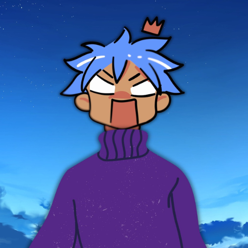

A mission to make Artificial Intelligence and Technology simple, exciting and accessible for every student and learner out there.

🧑💻Soumodeep Patra is a passionate tech content creator and digital storyteller with over 7 years of experience in the technology and videography industry. What started as a curiosity for cameras and computers evolved into a full-fledged mission — making complex technology understandable for everyone. Soumodeep founded Bravorik in 2025 with one simple goal: bridge the gap between cutting-edge AI and everyday learners.
It all started with a simple frustration — every time Soumodeep searched for AI and tech content, the explanations were either too complicated for beginners or too shallow to actually learn from. There was a massive gap between what experts were saying and what everyday students needed.
With 7 years of hands-on experience in technology and videography, Soumodeep decided it was time to build something different. Something that speaks the language of students — not professors. And so, in 2025, Bravorik was born.
The name Bravorik represents boldness, creativity and the relentless pursuit of knowledge. It is not just a brand — it is a movement for the next generation of tech-savvy creators, students and dreamers.
Soumodeep starts his journey in technology and videography — learning cameras, editing and the world of digital content creation.
The AI revolution begins. Soumodeep starts studying Machine Learning, AI tools and their real-world applications with growing passion.
After years of learning, the gap becomes clear — students need better, simpler AI content. The idea of Bravorik takes shape.
Bravorik officially launches on YouTube and Instagram with a mission to make AI simple for every student and learner in India and beyond.
Bravorik expands — articles, Discord community, and a fully rebuilt website. The mission is bigger than ever.
Bravorik would not exist without the support of some incredible tools and people.
A very special thank you to Claude by Anthropic — our AI partner that helped design, build and bring this website to life from the very first line of code to the final pixel. Claude has been the silent co-founder behind the scenes of Bravorik. This website is living proof of what humans and AI can build together.
Thank you to every student, viewer and supporter who believes in the Bravorik mission. You are the reason we create.